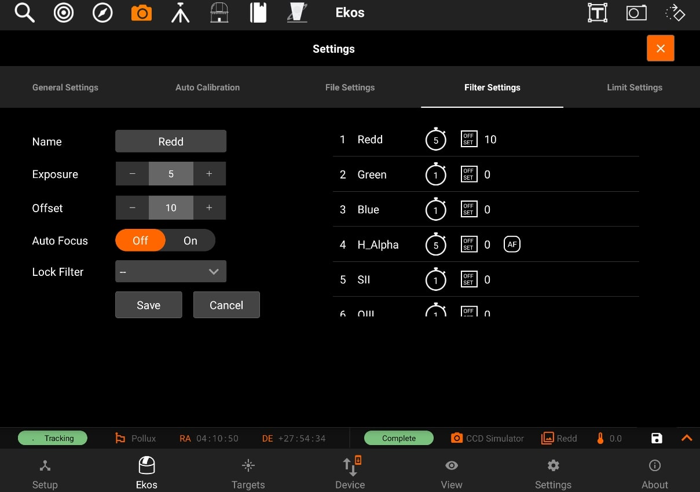
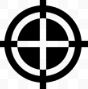

Capture
The Capture module is where you create sequences to capture your targets. In the typical astrophotography workflow, Capture module is used last after you finished Focusing, Aligning, and Guiding your target. Let us first define some common terms:
Train
You can Select / Edit the train specifically for Capture module. Each module has it's own train. Visit Optical trains topic for more.
- Presets: Specific camera and File Settings. This includes:
- ROI, binning
- Frame type
- Format filter (if any) etc.
- You need to create a preset with your desired settings and give it a descriptive name (e.g QHY_HA_300 would refer to using QHY camera using HA filter for 300-second) exposure.
- Sequence: Capture a number of images with the settings specified in a preset.
- The count field in capture module specify the number of images to capture using that preset.
- Delay parameters is used to introduce a delay in seconds between each captured image and default to zero.
- A sequence is also referred to as Job

Creating a sequence
To create a sequence, you should first create a new preset by tapping on the + button next to the preset dropdown box.


After filling the preset settings, you need to add a sequence

Once the sequence is added, you have to tap on the Save Icon on the top-right.

The default directory is under "Pictures". You can go back to previous directories by going back.

Sequence files are saved in "/home/stellarmate/sequences" path with respect to camera name.

By selecting the sequence file, you will be able to add a sequence in your sequences and can capture your images accordingly.

Capture Presets has the following structure:

- Preset name
- Frame Type
- Exposure
- Binning
- Format
- Encode
- Filter
- Temperature
- Gain/ISO
- Offset
After creating your presets, you can now tap on the preset dropdown in order to select the preset you want, and then tap on Add to Sequence, so the sequence can be added to the sequence list.
In the below example, you can see that there are 3 different jobs in the sequence list as shown by the filter in the beginning of each one. (red, green, and blue)
Sequences have the following structure, displayed through icons for simplicity:
- Top row
- Job Number
- Job Progress Bar
- Count Progress
- Delete Job
- Bottom row
- Filter
- Frame Type
- Binning
- Exposure
- Gain/ISO
- Offset
After adding the sequences, tap on the Play button under the Progress header to start the sequence.

During the capture, a soft "ding" sound will be played for each capture (you can turn on sounds by switching from Ekos Tab to Settings Tab and then toggling sounds on). After the capture is complete, you will see a notification message that says "CCD capture completed" and a "complete" sound will be played. In the case of the capturing process eing aborted for any reason, an "error" sounds will be played, and a notification message will be shown.

Delay control:
Delay in seconds between image captures.

Filter Settings
You can edit filters by tapping on the Filter button. The filter settings page will open and allow you to edit filter settings for each filter of the filter wheel selected in the dropdown menu.
Configure settings for each filter individually:
- Name: Filter Name
- Exposure: Set exposure time used when performing focus under this filter. By default, it is set to 1 seconds.
- Offset: Set relative offsets. Ekos will command a focus offset change if there is a difference between the current and target filter offsets. For example, given the values in the example image to the right, if the curernt filter is set to Red and next filter is Green, then Ekos shall command the focuser to Focus In by +300 ticks. Relative positive focus offsets denote Focus Out while negative values denote Focus In.
- Auto Focus: Check this option to initial AutoFocus process whenever the filter is changed to this filter.
- Lock Filter: Set which filter should be set and locked when performing autofocus for this filter.
Let's take an example. Suppose the capture sequence is running and the current filter is Green, so the relative already offset is set to +300. The next image in the sequence uses Hydrogen Alpha (H_Alpha) so before Ekos captures the next frame, the following actions take place:
- Since Lumonisity is specified as the locked filter and auto-focus is checked, the filter is changed to Lumonosity
- A focus offset is -300 is applied since the prior filter Green was moved +300 previously.
- Auto Focus process is initiated.
- Once Auto Focus is complete, the filter is changed to H_Alpha.
- A focus offset of -1200 is applied.
- Capture sequence is resumed.

To edit a filter, tap on it on the panel on the right-side of the page. All of its details will be filled in the panel on the left-side to be edited.
After you edit the filter, tap on the Save button to save the filter settings. The panel on the right-side will shown the new settings for the filter you just edited.

Calibration Settings 

Note: You can only edit calibration settings for capture jobs that have the frame type as Bias (B), Dark (D), or Flat (F).
For Flat Field frames, you can set calibration options in order to automate the process. The calibration options are designed to facilitate automatic unattended flat field frame capture. It can also be used for dark and bias frames if desired. If your camera is equipped with a mechanical shutter, then it is not necessary to set calibration settings unless you want to close the dust cover to ensure no light at all passes through the optical tube. For flat fields, you must specify the flat field light source, and then specify the duration of the flat field frame. The duration can be either manual, or based on ADU calculations.
- Flat Field Source
- Manual: The flat light source is manual.
- Dust Cover with Built-In Flat Light: If using a dust cover with built-in light source (e.g. FlipFlat). For dark and bias frames, close the dust cap before proceeding. For flat frames, close the dust cap and turn on the light source.
- Dust Cover with External Flat Light: If using a dust cover with external flat light source. For dark and bias frames, close the dust cap before proceeding. For flat frames, open the dust cap and turn on the light source. The external flat light source location is presumed to be the parking location.
- Wall: Light source is a panel on the observatory wall. Specify the Azimuth and Altitude coordinates of the panel and the mount shall slew there before capturing the flat field frames. If the light panel is controllable from INDI, Ekos shall turn it on/off as required.
- Flat Field Duration
- Manual: Duration is as specified in the Sequence Queue.
- ADU: Duration is variable until specified ADU is met.
Before the calibration capture process is started, you can request Ekos to park the mount and/or dome. Depending on your flat source selection above, Ekos will use the appropiate flat light source before starting flat frames capture. If ADU is specified, Ekos begins by capturing a couple of preview images to establish the curve required to achieve the desired ADU count. Once an appropiate value is calculated, another capture is taken and ADU is recounted until a satisfactory value is achived.
Limit Settings 

Limit settings are applicable to all the images in the sequence queue. When a limit is exceeded, Ekos shall command the appropiate action to remedy the situation as explained below.
- Guiding Deviation: If checked, it enforces a limit of maximum allowable guiding deviation for the exposure, if autoguiding is used. If the guiding deviation exceeds this limit in arcseconds, it aborts the exposure sequence. It will automatically resume the exposure sequence again once the guiding deviation goes below this limit.
- Autofocus if HFR exceeds a value: If autofocus is enabled in the focus module and at least one autofocus operation was completed successfully, you can set the maximum acceptable HFR value. If this option is enabled then between consecutive exposures, the HFR value is recalculated, and if found to exceed the maximum acceptable HFR value, then an autofocus operation is automatically triggered. If the autofocus operation is completed successfully, the sequence queue resumes, otherwise the job is aborted.
- Autofocus if change in temperature exceeds a value: If autofocus is enabled in the focus module and at least one autofocus operation was completed successfully, you can set the maximum acceptable change in temperature value. If this option is enabled then between consecutive exposures, the change in temperature value is recalculated, and if found to exceed the maximum acceptable change in temperature value, then an autofocus operation is automatically triggered. If the autofocus operation is completed successfully, the sequence queue resumes, otherwise the job is aborted.
- Refocus every x minutes: you can set your focuser to refocus every x minutes. (where x is the amount minutes input by the user)
File Settings 

Settings for specifying where captured images are saved to, and how to generate unique file names.
- Directory: Local directory to save the sequence images to.
- Format: Format is used to define the image file names by the use of placeholder tags.

- Suffix: Number of digits used to append the sequence number to the filename

- Preview: Path of your filename
You can now also unmount your USB device by pressing "Unmount" button next to your external storage device.

You can also set the directory path of your USB device (if attached). If USB device is connected, then External Storage devices are visible.
By selecting on of them, will set the Directory path of it.


Limit settings:
Limit settings are application to all the images in the sequence queue. When a limit is exceeded, Ekos shall command the appropriate action to remedy the situation.